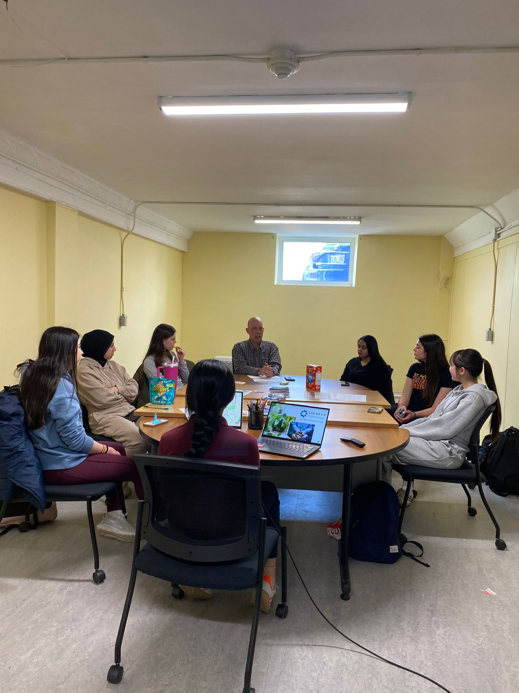

Original research, environmental observations, and community-driven projects developed through the Global Waste Intelligence Network.

Through field observations, waste audits, community cleanup data, and environmental justice research, this article examines how litter accumulation, public infrastructure, and maintenance practices influence the quality of public spaces throughout Peterborough.
Waste Collected
Cigarette Butts Found
Youth Engaged
Countries Represented